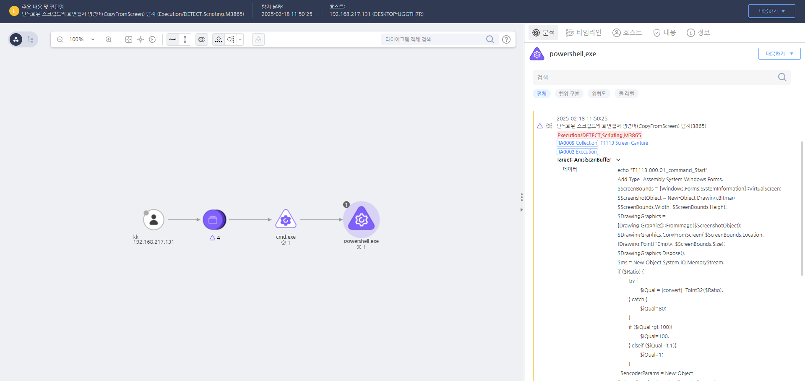

T1113.000.01 화면 캡쳐
D3FEND
MITRE ATT&CK 액션을 기준으로 대응 방안을 작성
Detection
난독화된 스크립트의 화면캡쳐 명령어(CopyFromScreen)를 탐지 했습니다.
Detection(EDR)

https://172.18.10.125:8903/#/analysis/alert/67b3f788002dc6cc000007fc
Response
공격자 C&C 서버로 추정되는 주소를 차단합니다.
Mitigations
1. 애플리케이션 허용 목록(Allowlisting) 적용
- AppLocker, Windows Defender Application Control (WDAC), macOS Gatekeeper 등을 활용하여 승인되지 않은 프로그램이 실행되지 않도록 제한합니다.
- 스크린 캡처 기능을 가진 프로그램(예:
Snipping Tool, screencapture, Print Screen)을 제어하여 악성 코드가 실행되지 않도록 방어합니다.
2. 최소 권한 원칙(Least Privilege) 적용
- 일반 사용자 계정에서 스크린 캡처 권한을 제한하여 악성 코드가 실행될 가능성을 줄입니다.
- 원격 데스크톱(RDP) 환경에서는 스크린 캡처 및 녹화 기능을 비활성화하여 데이터 유출을 방지합니다.
3. 엔드포인트 보호 및 이상 행위 탐지
- EDR(Endpoint Detection and Response) 및 NGAV(Next-Generation Antivirus) 솔루션을 사용하여 비정상적인 스크린 캡처 시도를 탐지 및 차단합니다.
- SIEM(Security Information and Event Management) 및 로그 모니터링을 통해
PrintScreen, screencapture, screenshot.exe 등의 명령어 실행을 감시합니다.
4. 시스템 및 네트워크 보안 강화
- DLP(Data Loss Prevention) 솔루션을 활용하여 스크린샷이 이메일, 클라우드 서비스, USB를 통해 외부로 유출되는 것을 차단합니다.
- 원격 액세스 도구(RAT) 감염을 방지하기 위해 방화벽 및 네트워크 보안 정책을 강화합니다.
5. 사용자 교육 및 정책 적용
- 내부 직원 보안 교육을 통해 악성 이메일, 피싱 사이트, 무단 원격 제어 도구 설치의 위험성을 인식하도록 합니다.
- 기업 내 중요한 시스템에서는 스크린 캡처 방지 정책(GPO, MDM 설정 등)을 적용하여 데이터 유출을 예방합니다.
Affected Techniques
Action 실행시 함꼐 영향을 받는 다른 Techniqes